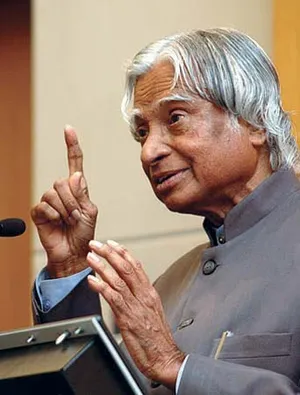

A.P.J Abdul Kalam
1931-2015
Missile Men of India
"Abdul Kalam" redirects here. For the member of Uttar Pradesh legislative assembly, see Abdul Kalam (Varanasi politician). A. P. J. Abdul Kalam Official portrait, c. 2002 President of India In office 25 July 2002 – 25 July 2007 Prime Minister Atal Bihari Vajpayee Manmohan Singh Vice President Krishan Kant Bhairon Singh Shekhawat Preceded by K. R. Narayanan Succeeded by Pratibha Patil Principal Scientific Adviser to the Government of India In office November 1999 – November 2001 President K. R. Narayanan Prime Minister Atal Bihari Vajpayee Preceded by Office established Succeeded by Rajagopala Chidambaram Director General of Defence Research and Development Organisation In office 1992–1999 Preceded by Raja Ramanna Succeeded by Vasudev Kalkunte Aatre Personal details Born 15 October 1931 Rameswaram, Madras Presidency, British India (present day Tamil Nadu, India) Died 27 July 2015 (aged 83) Shillong, Meghalaya, India Resting place Dr. A. P. J. Abdul Kalam Memorial Party Independent[1] Alma mater St. Joseph's College (BEng) Madras Institute of Technology (MEng) Profession Aerospace scientistauthor Awards List of awards and honours Notable work(s) Wings of Fire India 2020 Ignited Minds Indomitable Spirit Transcendence: My Spiritual Experiences with Pramukh Swamiji Scientific career Honours Padma Bhushan (1981) Padma Vibhushan (1990) Bharat Ratna (1997) Fields Aerospace engineering Institutions Defence Research and Development Organisation Indian Space Research Organisation Website A. P. J. Abdul Kalam Centre Signature Avul Pakir Jainulabdeen Abdul Kalam (/ˈʌbdʊl kəˈlɑːm/ ⓘ UB-duul kə-LAHM; 15 October 1931 – 27 July 2015) was an Indian aerospace scientist and statesman who served as the president of India from 2002 to 2007. Born and raised in a Muslim family in Rameswaram, Tamil Nadu, Kalam studied physics and aerospace engineering. He spent the next four decades as a scientist and science administrator, mainly at the Defence Research and Development Organisation (DRDO) and Indian Space Research Organisation (ISRO) and was intimately involved in India's civilian space programme and military missile development efforts. He was known as the "Missile Man of India" for his work on the development of ballistic missile and launch vehicle technology. He also played a pivotal organisational, technical, and political role in Pokhran-II nuclear tests in 1998, India's second such test after the first test in 1974. Kalam was elected as the president of India in 2002 with the support of both the ruling Bharatiya Janata Party and the then-opposition Indian National Congress. He was widely referred to as the "People's President". He engaged in teaching, writing and public service after his presidency. He was a recipient of several awards, including the Bharat Ratna, India's highest civilian honour. While delivering a lecture at IIM Shillong, Kalam collapsed and died from an apparent cardiac arrest on 27 July 2015, aged 83. Thousands attended the funeral ceremony held in his hometown of Rameswaram, where he was buried with full state honours. A memorial was inaugurated near his home town in 2017.
Biographies
- .Eternal Quest:Life and Times Of Dr Kalam by S Chandra;Pentagon Publishers.2002
- Awards: Received India's highest civilian honor, the Bharat Ratna, in 1997, along with Padma Bhushan (1981) and Padma Vibhushan (1990).
- Legacy: Continues to inspire millions, particularly youth, through his life of simplicity and dedication
- Author: Wrote several books, including his autobiography, Wings of Fire, Ignited